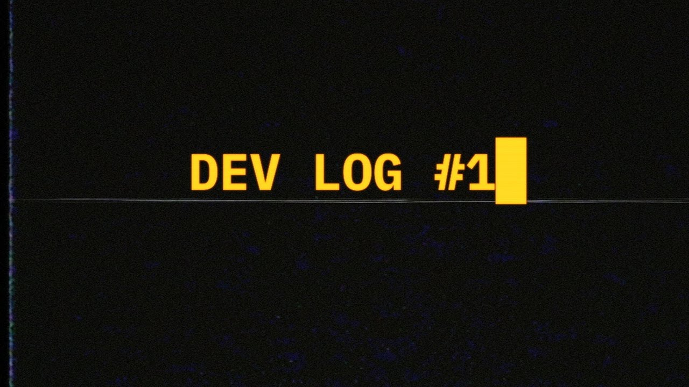

Advertising for Employers by building an Online Presense
In the growing industry of Games Development, it’s important to create a strong online presence and stand out among your peers.
Maintaining a consistent digital footprint through regular/consistent progress updates on your ongoing projects allows you to receive constructive feedback on
things you can improve and opens opportunities to learn things you hadn’t know before and, at the same time, builds a repitoire of your experiences to stand out to
potential employers in an increasingly competitive marketplace.

To start off from the basics, building a brand should begin from a rememborable brand name and logo – this is the label that will represent you to everybody who views your work and potential employers, so it’s best to keep it somewhat professional. The design of your logo should also be something to pay special attention to as its important to make it as bold and recognisable as possible – it’s best to use saturated and contrasting colours where possible in your logo’s design so that it stand out even in your company website. Keeping a cosistent colour palette and following general design principles(1) will go a long way to creating an easily memorable logo for your brand, and it’s important to keep recognisability across multiple platforms as it is a key to expand your audience and building a reputation in the games industry.
Mentioning this, having multiple outlets on a variety of social media platforms is another key to expanding your online presence, quite literally. The more platforms you showcase your work on, the higher probability it will land on someone’s home page, or on an employer’s watchlist. However, you should also watch to select the right platforms to showcase your work as, for example, platforms containing large amounts of NFSW content will greatly reduce the chances of employers viewing your work or platforms focused on connecting with friends and family (i.e facebook) instead of a larger audience will also reduce your outreach simply because of how it’s algorithms work(2). The following platforms are, as I find, the best to expand your outreach to both a general audience and employers:
- LinkedIn is a great platform for professional work showcases and updating your portfolio, along with connecting with other studios and recruiters. This is the platform to share any milestone you have achieved, showcase any game you have recently finished development on and stay informed on any job oppertunities that may show up.
- Artstation and Sketchfab are the best places to display creative works such as concept art, environmental art, level designs, 3D models, etc. These platforms prioritise professional visual presentation rather than casual showcases of your work, and do not require much engagement.
- Similarly to the above, Game Engine asset stores (such as Unity Asset Store and Unreal Engine Marketplace) are also a great place to share your work, but rather for people to purchase and make use of than simply to look at – High quality assets reflects highly on your credibility as a game developer. Asset stores also are not only limited to visual art, as code snippets or other programming focused assets can also be uploaded.
- Github, while not having any social media aspects, is an honorable mention as a platform to keep all of your projects in one place, not simply to view the project but to see the code structure and understand the time and effort put into your work.
Staying on top of the market and showcasing your arsenal (of skills) on this variety of platforms will help you find more opportunities for contact with employers, however, most of these platforms are focused on simply putting your work on display. To gather an audience and further interest in your work, content creation is where you should be turning your head to. I believe the Game Development scene heavily encourages content creation to garner a major interest and serve as general advertisement in your projects – afterall, the more people interested in your idea, the more people will consider purchasing the product after it’s finished development.
The two best platforms to do this on are Youtube and Tiktok:
- TikTok is the largest short form content platform, particularly among the most recent generation of teens/young adults (of which make up a large percentage of modern gamers(3)). This platform enables fast growth for any individual, taken you resort to sticking with the latest trends, however questionable.
- Youtube is the largest long-form content platform (at least in the western market) and due to it’s algorithm, your content may have the chance to reach a large audience if you title your content in an appealing way, along with a good thumbnail. Youtube also has their own form of short-form content, and is one of the newer entries into this entertainment area. It has quickly expanded and is now considered an equal competitor to tiktok, while not requiring content creators to stick to current trends to enter into the algorithm, with the downside of potentially not reaching as big of an audience.
As mentioned, shortform content is a good and fast way to start off a content creation platform, as this type of content is extremely popular with younger generations (people aged below 30), and especially so with Gen Z(4). This style of content in context to game development can include a fairly wide variety, of which one popular content type are Dev Logs(5), where you document and show the development process of your current project in an entertaining way to retain the viewers attention – this can be a long video cut into multiple shorter videos fit to upload to youtube shorts or tiktok. Another style of content that drives good engagement is showcasing problems and solutions, whether this comes from existing knowledge or something that you had come to learn recently so as to teach it to your audience(6). This gets a sizable minority of viewers to ‘chip in’ their own experiences and in general leads to a healthy discussion in the comments section, sharing knowledge and experience – while to your benefit through engagement.

Once you have created a following through short-form content, you can start to expand your brand and content type to an even larger audience. Long form videos will start to gain traction in the algorithm due to your existing popularity, even if it’s your first video of this type. This also opens up an opportunity to consider a new approach to developing a game: community driven development, where you directly take ideas from your newly formed community to further improve your project or specific aspects of it. Creating this sort of interactivity with your viewers will further drive interest and spread to more people – the more interaction/activity your videos get, the more “weight” it has in the algorithm, recommending it to more people.
In conclusion, I believe building a community around your projects and game development is a great way to garner both attention and “hype” towards the success of your games and to stand out among the crowd, it’s a great look and an achivement to build a community that takes interest in your game ideas alongside building a professional portfolio. It allows you to connect with a large amount of people, and allows you to hold your own weight in networking opportunities as someone who has a following online.
References:
(1) https://www.canva.com/learn/what-makes-a-good-logo/
(2) https://socialbee.com/blog/facebook-algorithm/
(3) https://opace.agency/blog/short-form-video-platforms
(4) https://www.amraandelma.com/top-long-form-vs-short-form-content-statistics/
(5) https://www.youtube.com/watch?v=mGjTF-c-CKA – Example of Dev Log
(6) https://www.youtube.com/shorts/pwUKx1WDsm0 – Example of Short-form dev knowledge